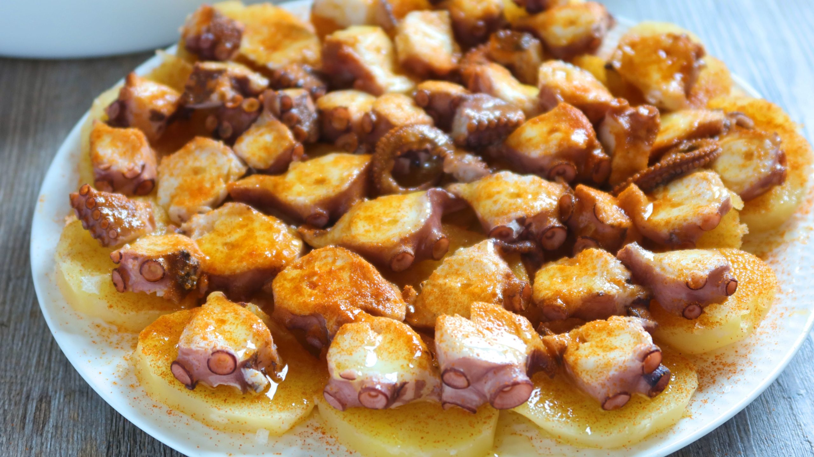

Pulpo a la Gallega

Pulpo a la Gallega is a traditional Galician dish made with octopus,
potatoes and paprika. It is often served as a tapa or a main course.
Ingredients
- 1 large octopus
- 3 large potatoes
- 1 large onion
- olive oil
- paprika
- salt
Instructions
- Boil the octopus in salted water until tender.
- Peel and slice the potatoes into thin pieces.
- Chop the onion into thin slices.
-
Heat olive oil in a pan and cook the potatoes until they are tender.
- Add the onion and cook for a few more minutes.
- Season the octopus with paprika and salt.
- Serve the octopus over the potatoes and onions.
Back to Home